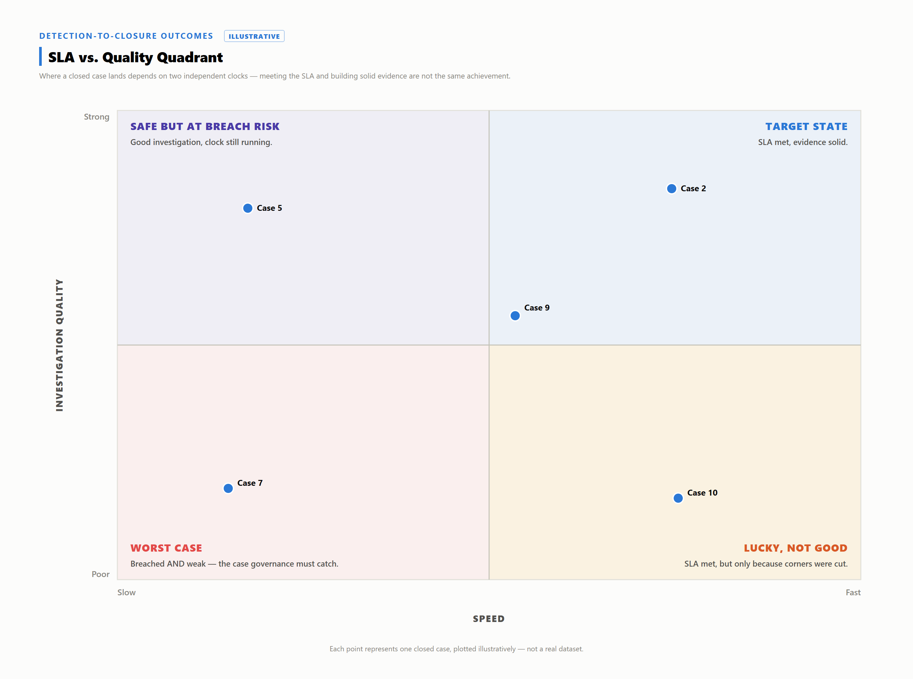

Every closed case gets two verdicts: a procedural one (did it close inside the clock) and a substantive one (was the investigation actually good). A monthly SLA report collapses both into one compliance percentage. Plotted as SLA Met/Breached against Quality High/Low, four combinations emerge — only one is unambiguously a management problem.

| Quadrant | Clock | Quality | Represents | Corrective action? |
|---|---|---|---|---|
| 1 — Target State | Met | High | Claimed outcome — verify, don't assume | No |
| 2 — Lucky, Not Good | Met | Low | Premature closure dressed as success | Yes — process review |
| 3 — Safe But At Breach Risk | Breached | High | Hard case, correctly worked | No — check the SLA's scoping |
| 4 — Worst Case | Breached | Low | Slow and wrong together | Yes — the one quadrant that warrants it |
Quadrant 1 is the least-verified claim in SLA reporting: "met" is recorded automatically, "high quality" is not. Verifying it takes evidence the clock never produces — RCA completeness, a second-reviewer audit score, a near-zero reopen rate.
Quadrant 2 is clock theater: the timer stopped because the investigation stopped looking, not because it finished. Case Study 10, elsewhere in this paper, shows exactly this — a clean, on-time close a second reviewer later found rested on triage too thin for the evidence.
A genuinely novel incident can take longer to work correctly than any generic clock allows — the SLA breaches, but scope is correctly mapped and root cause confirmed, not assumed. The risk is reputational, not investigative: an x-axis-only report records this identically to Quadrant 4, erasing the difference between "hard" and "bad."
Here the clock breached and the investigation was also weak — scope incomplete, root cause unconfirmed. No complexity narrative to invoke, no clean dashboard row to hide behind: this is the one quadrant where management response — staffing, playbook, or queue-prioritization fixes — is actually justified, because both signals agree something went wrong.
Meeting the SLA does not mean the investigation was good. Breaching the SLA does not mean the SOC failed. The clock and the case are two different stories, and only one of them made it into the contract.